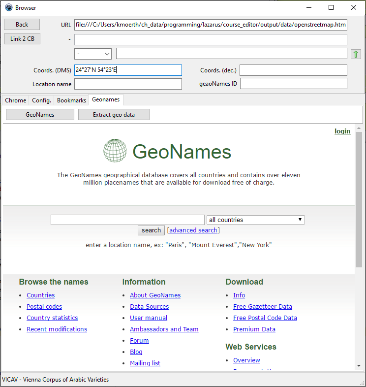
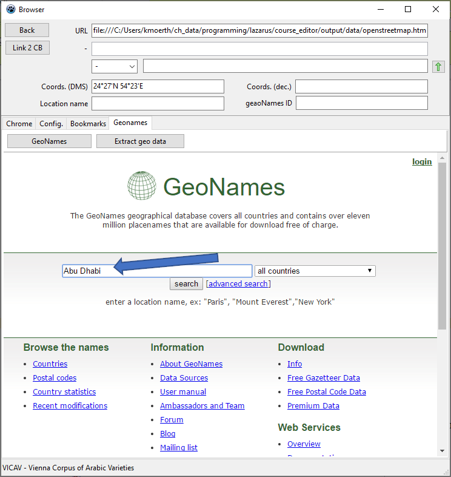
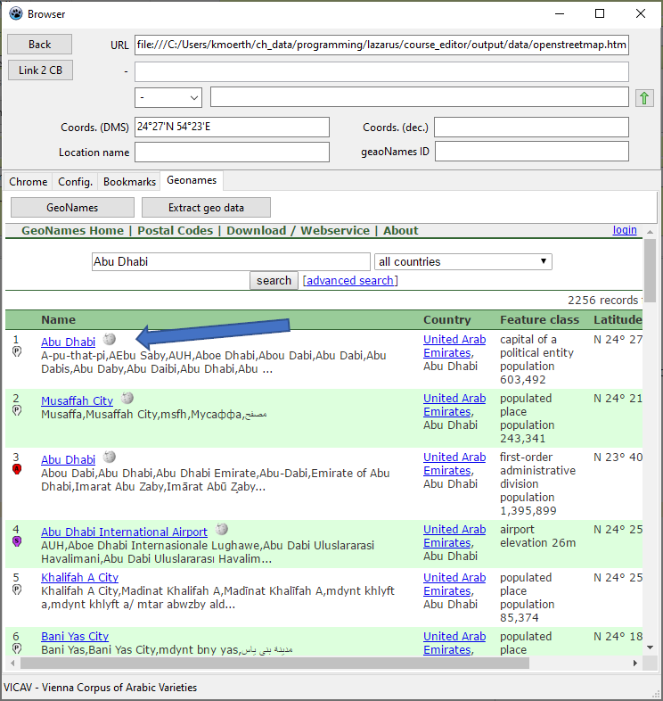
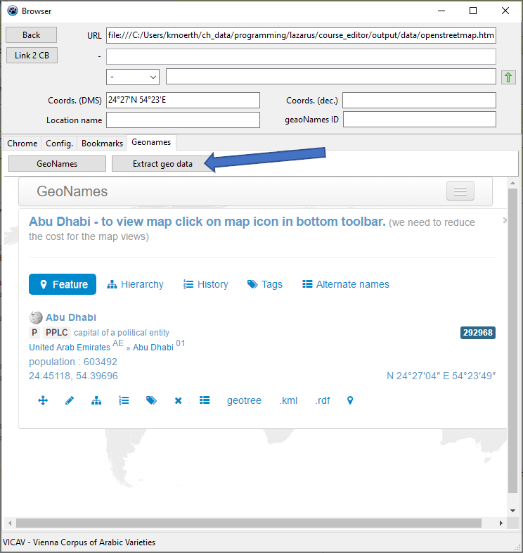
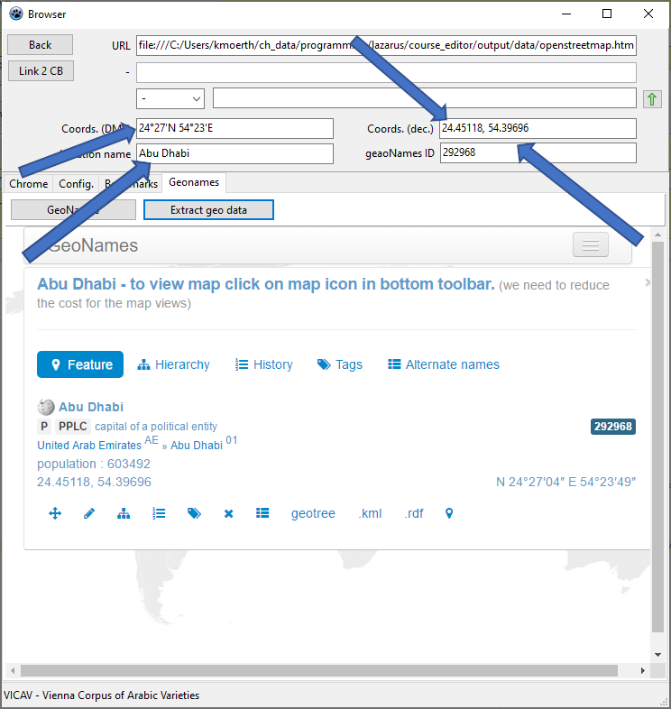

| 1 ˂TEI˃ENRICHER |
| 1.1 Introduction |
˂TEI˃Enricher is an experimental XML editor geared towards the easy production of TEI documents. It comes with some built-in features that ease the process of composing comparatively large text documents. Furthermore it provides functionalities to deal with documents containing text passages written in alphabets that run right-to-left and a functions being of interest to people working in linguistics.
˂TEI˃Enricher can be used to train a wide range of basic text technological skills: XML, XSLT, HTML, CSS, ...
˂TEI˃Enricher helps to create and edit standoff annotations.
˂TEI˃Enricher provides functions to chunk and tokenise texts.
˂TEI˃Enricher built-in functions to work with geo locations.
˂TEI˃Enricher allows to quickly insert code snippets. Either you go to a list of snippets (F6) and insert them into your text (F5) or you use hash delimited codes to insert them into the text.
˂TEI˃Enricher was first developped in a project creating linguistic teaching resources written in TEI.
˂TEI˃Enricher visualises XML texts by means of XSLT. It converts whole documents, but can also perform partial transfomations on the basis of xPath expressions.
Bear in mind, that both the program and its documentation are work in progress and as such are incomplete and prone to change.
| 1.2 Getting Started |
Thre following lines take you through the basic steps in editing XML texts with ˂TEI˃Enricher.
| 1.2.1 STEP 1: Starting the program |
We assume that you have installed the program. Start it by double-clicking on the ico or the executatble (file with the exe file extension).
| 1.2.2 STEP 2: Create a new project |
Press the Open empty editor button to open an empty editor.
Right click Create New Environment + New Doc. from Templ. to create the environment (HTML output path, CSS file, XSLT file etc.) for the new document.
| 1.2.3 STEP 3: Creating a text |
The editor has two parts: on the left side there is the XML text, on the right side the browser, the XSLT editor and the CSS editor are located.
| 1.3 Main Editor Components |
The functionalities provided by the editor are organised in several forms.
| 1.3.1 Control Form |
This form contains the file explorer which allows you to locate files you want to work with. To open a file, you double-click the filename.

It also contains the list of recent files as well as the bookmarks.
| 1.3.2 Editor form |
This is the main control of the application. The most salient feature is the dual structure which helps editors keep track of their editing.
| 1.3.2.1 Basic Editor Functions |
Some of the functions explained below can be accessed through right-clicking in the editor, some through pressing particular keys, and some can be triggered by both methods.
| Short Cut / Key | Function |
| Create New Environment + New Doc. from Templ. creates the basic structures for the new project: HTML output path, CSS file, XSLT file. | |
| Create New Doc. from Templ. copies a basic TEI document into the editor. | |
| Check for duplicate attributes | |
| F2 | The Show possible attributes function can only be triggered when the caret is at the last charcter in an element name. |
| F3 | Do Indents: This function reformats the whole document. |
| CTRL+F3 | Navigate to previous ID: This function only replaces the fragment identifier in the URL of the HTML and navigates to the fragment which is faster than a complete reload. |
| F5 | Insert End Tag inserts the logical next end tag. |
| F6 | Go to Snippets moves the focus to the tabsheet where the code snippets are defined. |
| F7 | Select Element: the function shows a list of elements that can be inserted at the current position of text. |
| CTRL+F7 | Show Structure extracts all heads and displays them in a separate form. |
| F8 | Transform the whole document: This function transform the whole text by means of XSLT and displays it in the Browser tabsheet of the editor. |
| CTRL+F8 | Transform fragment: the fragment defined by the xPath given in the Config tabsheet is displayed in the browser. |
| F9 | Select the current element |
| CTRL+F9 | Select the contents of the current element |
| CTRL+F | Search a string in the editor. |
| CTRL+I | Create New ID allows the creation of meaningful division ids from the head element in the line where the caret currently is positioned. It might replace an id such as id_0055 by id_introduction. |
| CTRL+V | Check the validity of a document |
| CTRL+W | Check well-formedness: this function controls the structural integrity of the document. |
| 1.3.2.2 Configuring the shortcuts |
Most of the above key assignments are not hard-coded but can be changed in the Short cuts tabsheet of the Control form.
| 1.3.3 Preview form |
Sometimes it is only necessary to quickly look at a file or to browse through a large number of files to inspect them. In such situations it can be cumbersome to open a separate editor form for each file. The preview functionality allows you to quickly go hrough a list of files and open them just for looking at.
| 1.3.4 Browser form |
The ˂TEI˃Enricher makes use of a freely available CHROME component to perform the visualisation tasks. It also has a special form to allow navigating the Internet while working on the XML.
| 1.3.5 Query Form |
The query form is used to navigate and to modify documents. The very simple interface looks for strings and is case-sensitive.
The query form can also be used to automatically add IDs to documents.
| 1.3.6 Structure form |
The structure form is supposed to help to navigate complex documents. The function showDocumentStructure extracts all the tei:head elements and displays them. The default transformation is accomplished with xsl\extract_heads.xsl. Clicking on any of the heads in the structure form will take you to the particular position in XML editor.
| 1.3.7 Macros’ form |
The ˂TEI˃Enricher provides a number of functions that can be combined into small macros that can execute particular more complex tasks.
| 1.4 Working on the XML |
| 1.4.1 Inserting Elements |
Try to avoid typing elements which is very error prone. There are two methods to insert tags into your text. (a) Either by choosing from a list of elements or by (b) typing a short-cut defined in the Code snippets tabsheet.
When pressing F7, a listbox becomes visible in the editor which shows the elements that are allowed in the current context according to the TEI schema. When you press the enter key, you insert the element. When you select some text and push F7, the element is placed around the selected text.
A second method is to define elements or even more complex templates that can be made up of several elements you might use repeatedly. You do this in the Code snippets tabsheet and associate them with a shortcut that is encircled by hashes. When you then type these shortcuts in the XML editor, they will be replaced by the templates you defined. There are plenty of predefined examples in the Code snippets tabsheet.
Mind that templates have to be well-formed!
You can also insert code snippets by pressing F6, choosing the right template and then insert the template by pressing F5. If you have selected any text, this will be replaced by the placeholder.
When you insert a new TEI division element via the shortcut, the editor automatically creates an id for the division.
| 1.4.2 Selecting Elements |
To select an element simply press F9 in the element. CTRL+F9 will select only the contents of the element.
| 1.4.3 Checking well-formedness (CTRL+W) |
When checking the structural integrity of the document you are working on, this function controls
"Properly nested" means that elements must not overlap, start and end tag must be inside the ‘parent’ element.
| 1.4.3.1 Bulk checking of well-formedness |
To check the well-formedness of a number of files, right click in the Files tabsheet and select Check wellformednerss of files.

| 1.4.4 Validation (ALT + V) |
Validation has generally been seen as one of the strong arguments in favour of any XML solution when discussing which formats to use in data processing. While the well-formedness test only checks the basic XML rules (one root, every start tag has to be followed by an end tag and elements must be properly nested), validation also checks the vocabulary used, makes sure that only permissible elements are used in the document and that they are in the right place. The validation check is performed against a TEI schema.
| 1.4.4.1 Schema file |
The schema file against which the validation is performed has to be indicated in Config tabsheet of the main form. There are two options: either you have a local schema on your computer or you get it from the Internet, ideally https://tei-c.org.

| 1.4.4.2 Bulk validation |
To validate a number of documents, right-click Validate files in the Files tabsheet of the Control Form.
| 1.4.5 Checking for duplicate attributes |
This function can be triggered by right-clicking in the editor. In the Config tabsheet of the Control Form you can define the xPath used the perform this check.
| 1.4.6 Extracting elements from documents |
On the Filelist tabsheet you can extract elements from a list of files. Imageine you want to control all the contents of all the geo elements in a number of documents.
| 1.4.6.1 STEP 1: Create a filelist |
Right-click in the file listbox. This takes you to the Filelist tabsheet.

| 1.4.6.2 STEP 2: launch a query |
Enter an xPath expression and push the return key.

The results of the extracted elements will show in the list box on the right side.

| 1.4.6.3 STEP 3: Analysing the results |
You can navigate through this list and check particular contents in the extracted elements.

When double-clicking on a filename the document is opened in an editor form.

| 1.4.7 Key Tables |
The Translation keys tabsheet allows you to define your own key assignments. By pushing F11 you can change the assignment. Languages are assigned in the Keys table like this:
//xml:lang=ar-arz A = ā ...
It is also possible to define several languages:
//xml:lang=ar-arz A = ā ... ... //xm:lang=ar F = ǧ //djim
| 1.4.8 Dealing with Arabic characters |
The edit component used in programming this application has problems with displaying right to left characters. Most of it works quite fine, however there are issues with details such as brackets and the like things. This is why we introduced an additional component to edit problematic text in another control. To edit text in this seperate component, press F1.
You can either select text or proceed line by line.
| 1.4.9 Backup |
Each time you save, ˂TEI˃Enricher creates a backup. These backups are saved to a backup directory in the same directory the document is saved to.
| 1.5 Visualising Data |
Data is visualised making use of XSLT. The editor makes use of the style loaded in the XSL tabsheet on the right side of the editor. The XSLT documents can be modified manually or by inserting predefined XSLT snippets.
| 1.5.1 Editing XSLT |
If a stylesheet has been defined in the xml-stylesheet processing instruction at the beginning of the document, this stylesheet is opened in the XSLT editor in the right side section of the editor. This style is used to display the data in the browser. This set-up of the editor is meant to keep the various parts of the system transparent and to allow easy juxtaposing of text and processing code.
In order to insert XSLT snippets from a list of templates, position the cursor where you want to insert the snippet. Then proceed as follows:
| Step 1 | Push F6 to transfer thefocus to the Code snippets tabsheet. |
| Step 2 | Select the snippet you need. |
| Step 3 | Press F5 to copy the snippet to XSLT. |
You can build links into your stylesheets that will allow you to navigate to the respective divisions in the XML editor. The browser triggers this function when it comes accross the prefix.
<attribute
name="href"><value-of
select="$sid"/></attribute>| 1.5.2 Complete vs. Partial Display |
To visualise the whole document simply push F8. The program extracts //tei:TEI from the document and displays it with the XSLT in the XSLT on the right side of the editor.
With large documents complete transformations may be cumbersome and time-consuming. By pressing Ctrl+F8, you can trigger a partial display, in which only selected parts of the document are transformed. Usually, this will be the div element. How many div elements before and after the current element are displayed is defined in the Config tabsheet of the Control Form.

Both functions reload the html in the browser which may take some time with larger documents. If you only want to navigate to another position in the html, the function navigToIDInBrowser (CTRL+F3) offers a faster alternative.
| 1.5.3 Processing Instructions |
At the beginning of XML documents, you often find processing instructions (PIs) that can contain application specific controls. The following PI specifies which XSL document to use to perform transformations.
<?xml-stylesheet type="text/xsl" href="../xsl/tei_2_html__simple_text.xsl"?>The next processing instructions are specific to the ˂TEI˃Enricher application. The following PI contains pseudo attributes which allow you to specify where the output of a transformation should be copied.
<?xslt inPathSegment="\texts\" outPathSegment="\html\" saveOptions="noSpacePreserve"?>The next one defines where the application loads the Code snippets to be used in editing a document. With this PI it is possible to associate different files with different lists.
<?snippets fn="snippets_001.xml" path="{appPath}\conf\"?>˂TEI˃Enricher can use the built-in msxml processor or the SAXON XSLT processor.
<?processor name="saxon|msxml" removePreserveFromXML="true" removePreserveFromXSLT="true"?>| Attribute | Function | Values |
| inPathSegment | Defines the relative path where the XML document is expected. | |
| outPathSegment | This string replaces the previous one when writing the result of the transformation. |
| 1.5.4 Linking |
The browser next to the text editor has built-in functionality to determine what to do when a link is actuated. The link can be opened in an external browser. This can be controlled by inserting prefixes in the href attributes of the output HTML.
| Prefix | Function |
| href="catchchrome:{@target}" | Looks for a path to the Chrome browser and opens it with the link in @target. |
| href="catchfirefox:{@target}" | Looks for a path to the Firefox browser and opens it with the link in @target. |
| href="{@ID}" | Transfers the focus to the element with the id in the editor form. |
| 1.5.5 Bulk transform |
It is also possible to perform XSLT transformations on a number of files.
| 1.5.5.1 STEP 1: Create a list of files to work on |
STEP 1: Right click in the file explorer and select Create list of files. You can also select single files clicking Single file to filelist (F6).
| 1.5.5.2 STEP 2: Editing the list of files |
Edit this list by deleting files from it which you don't want to transform.
| 1.5.5.3 STEP 3: Chose an XSLT file |
By double-clicking in the XSLT edit control you can choose the XSLT file to be used in the transformation.
| 1.5.5.4 STEP 4: Transforming |
By right-clicking Apply XSLT you start the transformation on all the files in the listbox. The output is written in the HTML directory of the project.
| 1.6 Working with geo data |
˂TEI˃Enricher has built-in functions to deal with geo data.
| 1.6.1 Verifying coordinates |
To verify geographical coordinates proceed as follows:
| 1.6.1.1 Select the coordinates |
In TEI documents geographical coordinates are often contained in a geo element. To select the contents of such an element press CTRL + F9. However, to perform the next step it is only necessary to select a string.
| 1.6.1.2 Show the position on the map |
Right click and select Show coord. on map. By default, the function is associated with CTRL+F6. The selected data is copied to the map window. There you press Enter. In most cases it will be necessary to zoom into the map to see the exact location of the place. If you are not happy with the position find new coordinates. This step is described in the chapter Finding new Coordinates.

| 1.6.2 Finding new coordinates |
| 1.6.2.1 Finding a new position: use the Geonames database |
The Geonames database is freely available. ˂TEI˃Enricher has a dedicated tabsheet to access the database in the browser form.

You enter a place name you want to locate:

Then you select the placename to obtain specific information about a geographic location.

To extract the data from the website Click the Extract Geo data button.

The data is then parsed from the html and entered in the respective controls.

And finally you can return the coordinates retrieved in this manner by pressing F5.
| 1.7 Linguistic functions |
| 1.7.1 Chunking |
The chunking function inserts sentence tags into a text.
| 1.7.2 Tokenisation |
The tokeniser isolates words, whitespace and puncuation marks.
| 1.7.3 Transcription |
The ˂TEI˃Enricher provides some ...
| 1.7.4 Deduplication |
While deduplication is not a - strictly speaking - linguistic process, it is usually needed by people who have corpora with duplicated sentences or utterances.
| 1.7.4.1 STEP 1: Creating a list of documents to work on |
Go to the Files tabsheet of the Control Form of the appliation and right-click All files to filelist.
| 1.7.4.2 STEP 2: Set an xPath to be used |
You have to indicate which elements you want to deduplicate. Usually this will be either //tei:s or //tei:u.
| 1.7.4.3 STEP 3: Start the process |
The process is started by pressing the Deduplicate button.
| 1.8 Standoff annotations |
˂TEI˃Enricher allows encoders to create and modify TEI conformant standoff annotations.
| 1.9 Using macros |
The macros are used to document workflows and to automate certain functionalities. Parameters have to be put in single quotes, functions are separated by a semicolon.
| 1.9.1 File functions |
| Name | Parameters | Explanations |
| copyFile | source = {actFile}|{dir}|{globVar}|{progDir} target = {actFile}|{dir}|{globVar}|{progDir} | The function does not assume any path as given, a full path is required in both parameters. |
copyFile('c:\temp\abc.xml', 'c:\temp_001\abc.xml'); copyFile('{actFile}', 'C:\file_{globVar}.xml'); | ||
| loadFile | source=files|fileList target={txt1}|{txt2}|{txt3}|{globalDoc} | This function loads the first or the next file from the file explorer (Shellist) or the Filelist tabsheet. |
loadFile('{progDir}\data\templates\tei_001.xml', '{txt1}'); | ||
| loadDocumentInEditor | source={progDir} splitSize | This function loads a document in a new editor form. |
loadFileInEditor('{progDir}\data\templates\tei_001.xml', '8000'); | ||
| saveFile | source={txt1}|{txt2}|{txt3}|{globalDoc} target={progDir} replaceString byString fileType=txt|xml|txtMode options=normaliseFN | This function saves a text to a particular directory. The filename is taken from the input unless the parameter replaceString is used. |
saveFile('{globalDoc}', '{progDir}\data\templates\tei_005.xml', '', '', 'xml', ''); | ||
| setRootPath | path fileType options=copyToFileList | This function navigates in the file explorer to the indicated path. |
setRootPath('{progDir}\templates', '*.xml', 'copyToFileList'); | ||
| 1.9.2 Text functions |
| Name | Parameters | Explanations |
| extractLines | source=files|fileList target={txt1}|{txt2}| {txt3}|{globalDoc}|{clipBoard} type=contains | This function extracts lines from a text. |
extractLines('{txt1}', '{txt2}', 'contains', 'div'); | ||
| replaceString | source= target= type=contains | This function replaces strings. |
replacestring('{lastEditor}', '{lastEditor}', '˂bibl', '\r\n˂bibl'); | ||
| transformLines | source={txt1}|{txt2}|{txt3} target={txt1}|{txt2}| {txt3}|{globalDoc}|{clipBoard} condition=nextLineHas() | This function performs a conditional substitution in each line. |
transformLines('EDITOR:nghw.xml', 'EDITOR:nghw1.xml', '{line}', 'lemma: {line}', 'nextLineHas(swSense)'); | ||
| 1.9.3 Linguistics |
| Name | Parameters | Explanations |
| doStatistics | source={fileList} target=file name | {clipBoard} xPath=//tei:w fieldNumber=1|2|3|... valueLength=6 options=ignoreCase | This function does statistics. |
extractLines('{txt1}', '{txt2}', 'contains', 'div'); | ||
| 1.9.4 XML functions |
| Name | Parameters | Explanations |
| singleNode | xPath type=xml|txt|val target | This function does statistics. |
singleNode('//@xml:id', 'val', 'globVar'); | ||
| 1.9.5 Varia |
| Name | Parameters | Explanations |
| doScreenshot | form={controlForm} | editorCaption outPathFN width height delaySecs | This function can be used to create reproduceable screenshots. It has been used in creating documentation of particular applications of this tool. |
doScreenshot('{controlForm}', '{progDir}\docu\images\try.png', '','', '3'); | ||
| showForm | form={prot} | {inspector} | {browser} | {controlForm} left width top height | This function makes particular forms visible. |
showForm('controlForm', '20', '20', '740', '500'); | ||
| 1.10 Enriching texts from lists |
˂TEI˃Enricher can also be used to enrich data from structured lists. The following usecase draws on experiences gathered in the VICAV project. The task at hand is to provide data for a web application which links text passages to bibliographical records taken from a ZOTERO bibliography. As goes without saying we make use of the TEI export of the ZOTERO library to work with.
| 1.10.1 STEP 1: Exporting a bibliography from ZOTERO |
We assume that you have a ZOTERO library which you would like to use. ZOTERO libraries can be exported as TEI documents.
| 1.10.2 STEP 2: Preparing the bibliography |
Make sure that the library is a well-formed and valid TEI document. When you use alphabets that are not usually used in European settings the export may contain speacial characters in IDs which should be cleaned up before you start.
| 1.10.3 STEP 3: Open the bibliography |
When you open the library, you may get a notification that the split size is too small. In this case, close the application again and increase the relevant value in the Control Form.

When you have opened the library in ˂TEI˃Enricher, you have to configure the list extraction parameters. Go to the List tabsheet on the right side of the editor.

The next step is to create a list of biblStruct elements. In the list we want to see (a) the xml:id attribute which contains the author and the publication year and (b) the ID of the ZOTERO library. The two values are separated by a blank. To create the list, enter the values as you see them in the following image.

The xPath for the list nodes is //tei:biblStruct.

| 1.10.4 STEP 4: Inserting ZOTERO links |
The advantage of the list on the right side is that it allows you to quickly access the contained data via xPath expressions. In the following scenario, we furnish author names in a document with references to the ZOTERO bibliography. We use the TEI element rs (reference string) to create the link.

Then you select the author name for which you want to look in the bibliography.

The function queryInList (F2) searches for a string in the list in the bibloiography form which starts with the selected string. Here you can choose the right item.

F5 takes you back to the first editor. Here you move the caret into the right position in the rs/@ref attribute and call the getXPathFromListItem (CTRL+G) function to insert the value on the right side of the list item.

Das Resultat sollte dann so aussehen.

An alternative method to query the list is to use the function gotoQueryList which is triggered by CTRL+L. This transfers copies the selected string to an edit which allows you to indicate exactly what you want to look for.

| 1.10.5 STEP 5: Perform checks of linked data |
To check the correctness of values in the rs elements, you have to configure the list in a manner that the part which has been on the right side is moved to the left, as the function looks by default for initial matches, a match at the beginning of the string. To rearrange the list accordingly, simply turn around the values in the Content nodes, i.e. put {@corresp} first.

Then press the Create list button and the list gets resortet.
Then, you go back to the editor with the links, place the cursor in the attribute value you want to check, select it with F9 and and perform the query (as described above) by pressing F2.